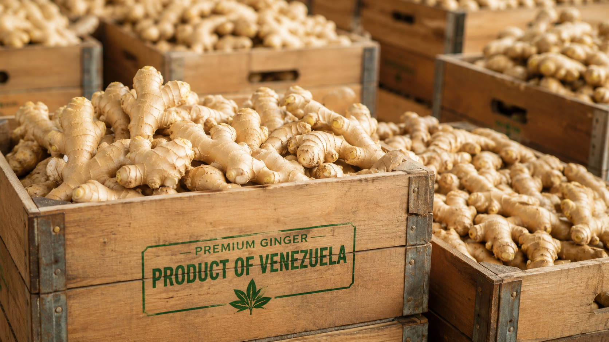
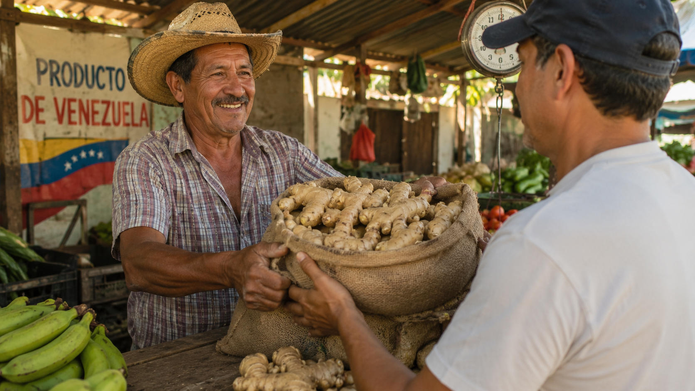

Abastecemos mercados mayoristas, distribuidores, supermercados e industrias alimenticias. Compra directamente al productor, sin intermediarios, con disponibilidad inmediata y despachos coordinados desde el estado Miranda.
Atendemos compradores mayoristas que requieren abastecimiento constante, calidad y negociación directa con el productor.
Abastecimiento de grandes volúmenes para comercialización.
Compradores dedicados a la distribución regional.
Empresas que compran por toneladas para redistribución.
Cadenas y comercios que buscan proveedores confiables.
Empresas procesadoras y fabricantes de alimentos.
Compradores interesados en abastecimiento para exportación.
Eliminamos intermediarios para ofrecer un proceso de negociación transparente, precios competitivos y suministro confiable.
Al negociar directamente con el productor evita sobrecostos innecesarios.
El producto se prepara para despacho conservando su calidad y frescura.
Las condiciones se acuerdan directamente con quienes producen el cultivo.
Coordinamos el despacho para cumplir con los tiempos acordados.
Un proceso sencillo, transparente y orientado a compradores mayoristas.
Indíquenos el volumen requerido y la ciudad de entrega.
Verificamos inventario, calidad del lote y fecha estimada de despacho.
Organizamos el despacho para que la mercancía llegue en las condiciones acordadas.
Reciba jengibre fresco directamente desde el productor.
Nos identificamos por la honestidad, el trabajo digno y el respeto absoluto a nuestros clientes.
Hablamos claro desde el primer día. Sin falsas promesas. Si coordinamos un despacho con usted, cumplimos la palabra empeñada.
Trasladamos la mercancía sin costo adicional de transporte directo hasta la puerta de su comercio o mercado mayorista aliado.
Rizomas seleccionados meticulosamente en el corte del cultivo en Miranda. Tubérculos firmes, limpios y con excelente picor.
Conectamos nuestro cultivo en el Estado Miranda con las principales plazas comerciales del eje central y oriental del país:
Origen del Cultivo
Flete en todas las rutas
Protegemos tu inversión y nuestra logística con un proceso transparente y libre de riesgos.
Recibimos solicitudes desde media tonelada (500 kg) en adelante. Nos adaptamos tanto a medianos distribuidores como a cargas completas.
Para resguardar la viabilidad y ofrecerle el flete gratis, el despacho se concreta una vez que la ruta sume un volumen de 3.500 kg a 4.000 kg (carga completa de camión 350).
No solicitamos ni aceptamos pagos anticipados hasta que la carga del camión esté totalmente lista y confirmemos la fecha y hora exacta de salida desde Miranda.
Al confirmarle la salida programada del camión, se activa la orden mediante un anticipo del 50%. El saldo restante lo cancela al recibir el producto conforme en su negocio.
Imágenes referenciales e inspiradoras de nuestros cortes de cultivo y el cuidado que dedicamos a cada raíz.


El mercado del jengibre es dinámico y los precios varían según la plaza local. No publicamos tarifas fijas porque preferimos acordar un trato ganar-ganar directo y personalizado según el volumen que necesite.
Nota para compradores medianos: Si pide entre 500 kg y 2.000 kg, agrupamos su pedido en una ruta consolidada para despacharle sin costo de transporte.